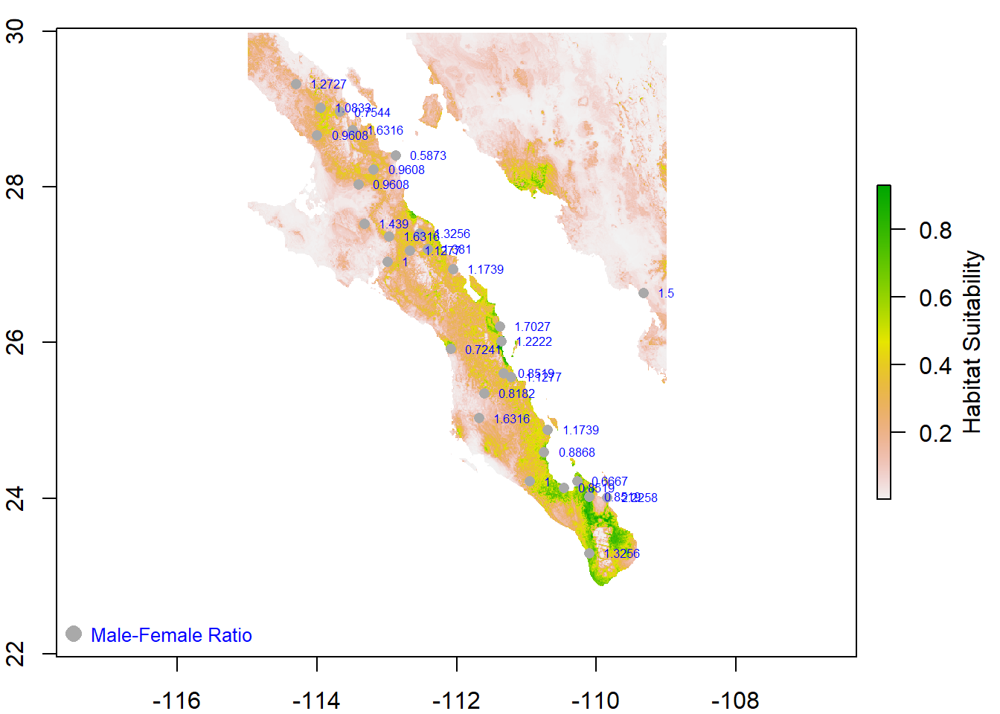
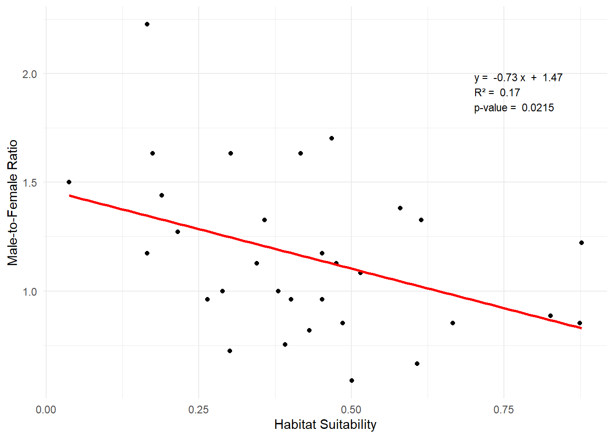
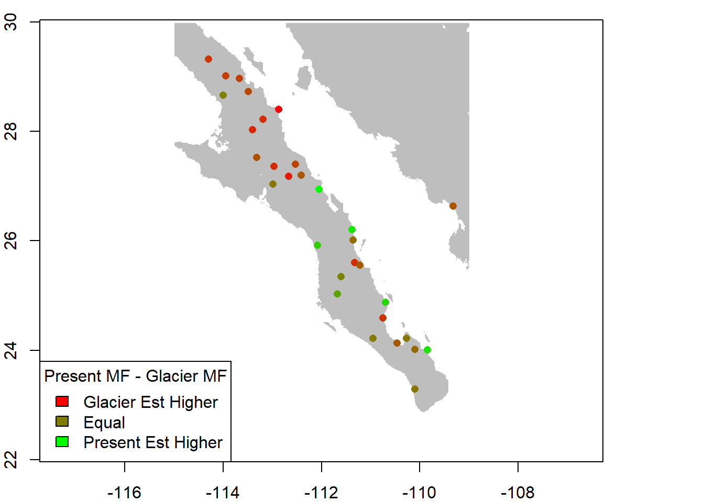

library(tidyverse)
library(dplyr)
library(raster)
library(sf)
library(ggplot2)
library(kableExtra)
library(knitr)
library(gtools)Final Exam
read_csv ( "Arapat_Locations.csv" ) |>
st_as_sf( coords=c("Longitude","Latitude"), crs=4326 ) -> location
samples <- read_csv ( "Arapat_Samples.csv" )
suitrast <- raster("Suitability_now.tif") #epsg 4326
glacrast <- raster("Suitability_lgm.asc") #epsg 4326Determine the extent to which changing climate may have impacted sex ratio divergence among locations in the Sonora Desert bark beetle, Araptus attenuatus.
Question 1
Do sampled populations of the beetle have different sex ratios? You can consider the plant to be replicated within each site.
Using an ANOVA to test whether sex ratios differ across samples of beetles might seem intuitive, but it isn’t appropriate for this specific scenario. Here’s why: The sex of each beetle is binary (Male or Female). ANOVA is designed for continuous dependent variables, not categorical or proportion data. Using ANOVA directly on binary data violates assumptions of normality and homoscedasticity.
To calculate sex ratios, you essentially work with proportions (e.g., proportion of males out of total beetles). Proportions are bounded between 0 and 1, and they follow a binomial distribution—not the normal distribution that ANOVA assumes.
samples$Sex_binary <- ifelse(samples$Sex == "Male", 1, 0)
site_summary <- aggregate(Sex_binary ~ Site, samples, function(x) {
c(males = sum(x), total = length(x))
})
site_summary <- do.call(data.frame, site_summary)
colnames(site_summary) <- c("Site", "Males", "Total")site_contingency <- xtabs(~ Site + Sex, data = samples)
chisq.test(site_contingency)
Pearson's Chi-squared test
data: site_contingency
X-squared = 68.382, df = 30, p-value = 7.968e-05Q1 METHODS
To determine whether the sampled populations of beetles exhibit differences in sex ratios, we analyzed data collected from beetles sampled across multiple sites. At each site, beetles were randomly sampled from several plants, with each plant serving as a replicate within the site. The sex of each beetle was recorded as either male or female.
To test for differences in sex ratios among sites, we first summarized the data by calculating the number of males and the total number of beetles sampled at each site. A contingency table was then constructed to capture the counts of males and females across all sites. A Pearson’s Chi-squared test was applied to this contingency table to assess whether the observed sex ratios differed significantly among sites.
Q1 RESULTS
The Chi-squared test revealed a significant difference in sex ratios among the sampled sites. With a X2 value of 68.38, 30 degrees of freedom, and a p-value of 7.968e-05. This result indicates that the proportions of males and females were not consistent across the sampled sites. Instead, this shows that there are variations in sex ratios among the populations.
Question 2
Which sites have sex ratios that deviate from equal proportions of males and females at the site?
site_summary$mfratio <- site_summary$Males / (site_summary$Total - site_summary$Males)
site_summary$mfratio <- round(site_summary$mfratio, 4)
site_summary$p_value <- mapply(function(males, total) {
binom.test(males, total, p = 0.5)$p.value
}, site_summary$Males, site_summary$Total)
significant_sites <- subset(site_summary, p_value < 0.05)
significant_sites |>
kable(caption = "Sex Ratios Differing Significantly from Equal Proportions") |>
kable_styling(bootstrap_options = c("striped", "hover", "condensed"),
full_width = FALSE,
position = "center")| Site | Males | Total | mfratio | p_value | |
|---|---|---|---|---|---|
| 9 | Site 17 | 62 | 100 | 1.6316 | 0.0209787 |
| 10 | Site 18 | 69 | 100 | 2.2258 | 0.0001831 |
| 13 | Site 20 | 62 | 100 | 1.6316 | 0.0209787 |
| 14 | Site 21 | 63 | 100 | 1.7027 | 0.0120330 |
| 22 | Site 29 | 62 | 100 | 1.6316 | 0.0209787 |
| 31 | Site 9 | 37 | 100 | 0.5873 | 0.0120330 |
Q2 METHODS
To identify which sites have sex ratios that deviate significantly from an equal proportion of males and females (50:50), we conducted a series of binomial tests. For each site, we tested whether the observed number of males significantly differed from the expected number under the assumption of equal proportions. Binomial tests were performed using the total number of beetles sampled at each site and the observed count of males. The resulting p-values from these tests were used to determine significance, with p < 0.05 indicating a site where the sex ratio significantly deviated from equality.
Q2 RESULTS
—Site 17, 20,21,29, and 9 all significantly deviated from the equal proportion of males to females (50:50). P values for these deviated sites ranged from 0.0002 to 0.02 (REFER TO KABLE TABLE).
Question 3
Is there a functional relationship between the habitat suitability at the sampling locations and the sex ratio? Since all of our suitability measurements are taken from raster data with a cell size of 1.0 km2 (e.g., all plants are in the same grid cell), collapse the sex ratio estimates to a single value per site.
suitrast <- projectRaster(suitrast, crs=4326)
site_sumgeom <- merge(location, site_summary[, c("Site", "mfratio")], by = "Site", all.x = TRUE)baja_extent <- extent( c(-115, -109, 23, 30 ) )
baja_extentclass : Extent
xmin : -115
xmax : -109
ymin : 23
ymax : 30 par(mar = c(2, 2, 1, 1))
plot(suitrast)
plot( site_sumgeom["Site"],
pch=16,
col = "darkgrey",
add=TRUE)
text(site_sumgeom$geometry, labels = site_sumgeom$mfratio, pos = 4, cex = 0.5, col = "blue")
legend("bottomleft",
legend = "Male-Female Ratio",
pch = 16,
col = "darkgrey",
bty = "n",
pt.cex = 1.5,
text.col = "blue",
cex = 0.8)
mtext("Habitat Suitability", side = 4, line = 3.5)
site_sumgeom$habitat_suitability <- extract(suitrast, st_coordinates(site_sumgeom))# Test for normality
hist(site_sumgeom$habitat_suitability,
main = "Histogram of Habitat Suitability",
xlab = "Habitat Suitability",
col = "lightblue",
border = "black",
breaks = 10) 
hist(site_sumgeom$mfratio,
main = "Histogram of Male-Female Ratio",
xlab = "Male-Female Ratio",
col = "lightblue",
border = "black",
breaks = 10) cor.test(site_sumgeom$habitat_suitability, site_sumgeom$mfratio)
Pearson's product-moment correlation
data: site_sumgeom$habitat_suitability and site_sumgeom$mfratio
t = -2.4298, df = 29, p-value = 0.02153
alternative hypothesis: true correlation is not equal to 0
95 percent confidence interval:
-0.66823344 -0.06664876
sample estimates:
cor
-0.411276 lm_model <- lm(mfratio ~ habitat_suitability, data = site_sumgeom)
slope <- coef(lm_model)[2]
r_squared <- summary(lm_model)$r.squared
intercept <- coef(lm_model)[1]
p_value <- summary(lm_model)$coefficients[2, 4] ggplot(site_sumgeom, aes(x = habitat_suitability, y = mfratio)) +
geom_point() +
geom_smooth(method = "lm", se = FALSE, color = "red") +
labs(x = "Habitat Suitability", y = "Male-to-Female Ratio") +
theme_minimal() +
annotate("text",
x = max(site_sumgeom$habitat_suitability) * 0.8,
y = max(site_sumgeom$mfratio) * 0.9,
label = paste("y = ", round(slope, 2), "x", " + ", round(intercept, 2),
"\nR² = ", round(r_squared, 2),
"\np-value = ", round(p_value, 4)),
hjust = 0, vjust = 1, size = 3, color = "black")
Q3 METHODS
To investigate the relationship between habitat suitability and the male-to-female sex ratio of beetles at the sampling locations, we utilized raster habitat suitability data, sampling locations, and sex ratio estimates aggregated to a single value per site. Habitat suitability measurements were derived from a raster dataset with a spatial resolution of 1 km², while sex ratios were calculated from raw data as the male-to-female ratio for each site. The habitat suitability raster was re-projected to the EPSG:4326 coordinate system to align with the spatial reference system of the sampling locations. Sampling locations, containing latitude and longitude information, were overlaid onto the habitat suitability raster, and suitability values corresponding to each site were extracted using site coordinates.
To assess the functional relationship, exploratory data analysis was first conducted by examining histograms of habitat suitability and male-to-female sex ratios to evaluate the normality of the distributions. A Pearson correlation test was then performed to quantify the strength and direction of the relationship between habitat suitability and sex ratio. Additionally, a linear regression model was fitted to predict the male-to-female ratio using habitat suitability as the explanatory variable. The model’s slope, intercept, R2, and p-value were recorded. Finally, a scatterplot was created to visualize the relationship between habitat suitability and the male-to-female ratio, with a fitted regression line and annotated model parameters.
Q3 RESULTS
The analysis revealed a significant negative correlation between habitat suitability and the male-to-female sex ratio (r=−0.41, p=0.0215, 95% CI: [−0.67,−0.07]). This suggests that as habitat suitability increases, the male-to-female ratio decreases. The linear regression model further supported this relationship, with the equation:Male-Female Ratio = -0.73 * Habitat Suitability + 1.47
The regression model explained 16.9% of the variation in sex ratio (R2 = 0.169), and the slope of the relationship was statistically significant (p=0.0215).
The scatterplot (REFER TO FIGURE!!!!) displayed the data points, with habitat suitability on the x-axis and male-female ratio on the y-axis, along with a fitted regression line in red. The equation of the regression line, the coefficient of determination, and the p-value were annotated on the plot. The data indicated a clear trend, where sites in areas of higher habitat suitability exhibited lower male-female ratios.
Question 4
Does the inclusion of Phenotype A and Phenotype B improve the functional relationship over habitat suitability alone?
DO regressions and AIC I THINK? But I would have to take the averages of the pheonotypes for each site since there are 100 entries for each phenotype for each site.
avgsamp <- samples |>
group_by(Site) |>
summarize(
Avg_PhenotypeA = mean(PhenotypeA, na.rm = TRUE),
Avg_PhenotypeB = mean(PhenotypeB, na.rm = TRUE))
avgsamp <- avgsamp |>
left_join(site_sumgeom, by = "Site")
#Check for normality
hist(avgsamp$Avg_PhenotypeA,
main = "Histogram of Average PhenotypeA",
xlab = "PhenotypeA",
col = "lightblue",
border = "black",
breaks = 10) hist(avgsamp$Avg_PhenotypeB,
main = "Histogram of Average PhenotypeB",
xlab = "PhenotypeB",
col = "lightblue",
border = "black",
breaks = 10) predictors <- c("mfratio", "Avg_PhenotypeA", "Avg_PhenotypeB")
predictor_combinations <- list()
for (i in 1:length(predictors)) {
combinations <- combn(predictors, i, simplify = FALSE)
predictor_combinations <- c(predictor_combinations, combinations)}
model_results <- list()
for (combo in predictor_combinations) {
formula_str <- paste("habitat_suitability ~", paste(combo, collapse = " + "))
formula_with_interaction <- as.formula(paste(formula_str, collapse = ""))
model <- lm(formula_with_interaction, data = avgsamp)
model_aic <- AIC(model)
model_r2 <- summary(model)$r.squared
model_results[[paste(combo, collapse = "_")]] <- list(
AIC = model_aic,
R2 = model_r2)}
model_aics <- sapply(model_results, function(x) x$AIC)
model_r2s <- sapply(model_results, function(x) x$R2)
model_names <- names(model_results)
results_df <- data.frame(
AIC = model_aics,
R2 = model_r2s)
kable(results_df, caption = "AIC and R-squared Values for Each Model")|>
kable_styling(bootstrap_options = c("striped", "hover", "condensed"),
full_width = FALSE,
position = "center")| AIC | R2 | |
|---|---|---|
| mfratio | -10.602889 | 0.1691480 |
| Avg_PhenotypeA | -4.901224 | 0.0013780 |
| Avg_PhenotypeB | -5.185298 | 0.0104872 |
| mfratio_Avg_PhenotypeA | -8.773598 | 0.1737107 |
| mfratio_Avg_PhenotypeB | -9.897566 | 0.2031329 |
| Avg_PhenotypeA_Avg_PhenotypeB | -3.219780 | 0.0115873 |
| mfratio_Avg_PhenotypeA_Avg_PhenotypeB | -8.051844 | 0.2070888 |
The output presents the AIC values for various linear regression models, each with different combinations of predictors. The model with only mfratio as the predictor has an AIC of -10.602889, while the models with Avg_PhenotypeA and Avg_PhenotypeB as individual predictors have AICs of -4.901224 and -5.185298, respectively. The models with pairs of predictors, such as mfratio and Avg_PhenotypeA, have an AIC of -8.773598, while the combination of mfratio and Avg_PhenotypeB has the lowest AIC of -9.897566, indicating it as the best-fitting model. The model with Avg_PhenotypeA and Avg_PhenotypeB has an AIC of -3.219780, and the model with all three predictors (mfratio, Avg_PhenotypeA, and Avg_PhenotypeB) has an AIC of -8.051844. In summary, the best model according to the AIC criterion is the one with mfratio and Avg_PhenotypeB, while the model with Avg_PhenotypeA and Avg_PhenotypeB provides the worst fit.
Q4 METHODS
To investigate whether the inclusion of Phenotype A and Phenotype B improves the functional relationship between habitat suitability and the male-to-female sex ratio, we expanded our analysis to include these additional predictors. First, we aggregated the raw beetle dataset by site, calculating the average values of Phenotype A and Phenotype B for each site. These averages were then combined with the previously calculated male-to-female ratio and habitat suitability values for each site to form a unified dataset.
Histograms of the average Phenotype A and Phenotype B values were examined to evaluate the normality of these predictors. Using this dataset, we constructed multiple linear regression models with habitat suitability as the dependent variable and different combinations of the three predictors—male-to-female ratio, average Phenotype A, and average Phenotype B—as independent variables.
To identify the best-fitting model, we assessed all possible combinations of predictors, ranging from single-variable models to a full model including all three predictors and their additive effects. For each model, we calculated the Akaike Information Criterion (AIC) and the coefficient of determination R2 as metrics for model performance. Lower AIC values indicated better model fit, while higher R2 values indicated greater explanatory power. Results for all models were tabulated for comparison.
Q4 RESULTS
The results of the model comparison are summarized in Table 1, which displays the AIC and R2 values for each combination of predictors. The single-variable model with the male-to-female ratio had the lowest AIC (-10.60) among all single-predictor models and an R2 of 0.169, indicating a modest explanatory power. The addition of Phenotype A or Phenotype B to the model increased R2 but at the cost of higher AIC values when these predictors were used independently.
The best-performing model, based on the lowest AIC value (-10.6), was the model that included only male-to-female ratio. This indicates that the inclusion of Phenotypes A and B do not improve the functional relationship over habitat suitability either on their own or in any combination.
Question 5
Using the data from the last glacial maximum and the sampling locations, has the suitability changed at each location (e.g., was it as suitable 20,000 years ago as today)?
glacrast <- projectRaster(glacrast, crs=4326)
location$PresentSuit <- extract(suitrast, st_coordinates(location))
location$GlacSuit <- extract(glacrast, st_coordinates(location))
#check for normality with histograms
hist(location$PresentSuit,
main = "Histogram of Present Habitat Suitability",
xlab = "Habitat Suitability",
col = "lightblue",
border = "black",
breaks = 10) hist(location$GlacSuit,
main = "Histogram of Glacial Melt Habitat Suitability",
xlab = "Habitat Suitability",
col = "lightblue",
border = "black",
breaks = 10) location$SuitDiff<- location$PresentSuit- location$GlacSuit# I WOULD ASSUME WE USE A TTEST HERE, BUT WE DID NOT DO TTEST IN CLASS
t_test <- t.test(location$PresentSuit, location$GlacSuit, paired = TRUE)
print(t_test)
Paired t-test
data: location$PresentSuit and location$GlacSuit
t = -1.9272, df = 30, p-value = 0.06347
alternative hypothesis: true mean difference is not equal to 0
95 percent confidence interval:
-0.082380190 0.002387817
sample estimates:
mean difference
-0.03999619 ggplot(location, aes(x = GlacSuit, y = PresentSuit)) +
geom_point() +
geom_abline(slope = 1, intercept = 0, linetype = "dashed", color = "red") +
labs(
x = "Suitability (Glacial Melt)",
y = "Suitability (Present)",
title = "Habitat Suitability: Present vs Glacial Melt"
) +
theme_minimal()Scatterplot: Points above the dashed 1:1 line indicate areas where present-day suitability is higher than during the LGM, and points below the line indicate the opposite.
MAYBE CREATE A NEW MAP SHOWING THE DIFFERENCES??????????
Q5 METHODS
To investigate whether habitat suitability has changed at sampling locations between the last glacial maximum (~20,000 years ago) and the present day, we used two raster datasets representing habitat suitability for the two time periods. Sampling locations were provided as a spatial dataset containing geographic coordinates. Suitability values were extracted from each raster at the sampling locations, and the differences in suitability values between the present day and the glacial maximum were calculated.
A paired t-test was conducted to determine whether the mean difference in suitability values between the two time periods was significantly different from zero. The null hypothesis stated that there was no difference in habitat suitability between the present day and the last glacial maximum, while the alternative hypothesis stated that the mean difference was not equal to zero.
Q5 RESULTS
Suitability values were successfully extracted for 31 sampling locations from both the present-day and last glacial maxiumum raster datasets. The paired t-test yielded a t-statistic of −1.9272 with 30 degrees of freedom and a p-value of 0.06347. The mean difference in suitability was −0.040, with a 95% confidence interval of −0.082,0.002.
The results indicate that the difference in habitat suitability between the present day and the LGM was not statistically significant at the α=0.05 level. However, the mean difference suggests a slight trend toward lower suitability in the present day compared to the last glacial maximum
Question 6
Predict the distribution of the historical sex ratio by applying the model you developed for current conditions to the suitability estimated from the last glacial maximum. Across the landscape, do you detect any trends that may be due to the differences in climate, as measured by our estimates of habitat suitability?
location$MFestimate <- (-0.73* location$GlacSuit + 1.47)
location$PresEstimate <- (-0.73* location$PresentSuit + 1.47)
location$MFdifference <- (location$PresEstimate - location$MFestimate)baja_extent <- extent(c(-115, -109, 23, 30))
par(mar = c(2, 2, 1, 1))
plot(suitrast)
scaled_sizes <- (location$MFestimate - min(location$MFestimate)) /
(max(location$MFestimate) - min(location$MFestimate)) * 2 + 0.5
plot(location["Site"],
pch = 1,
col = "blue",
cex = scaled_sizes,
add = TRUE)
legend("bottomleft",
legend = c("Low MFestimate", "High MFestimate"),
pch = 1,
col = "blue",
pt.cex = c(0.5, 2),
bty = "n",
text.col = "blue",
cex = 0.8)
mtext("Habitat Suitability", side = 4, line = 3.5)color_palette <- colorRampPalette(c("red", "green"))
num_colors <- 100
color_values <- color_palette(num_colors)
zero_color <- color_values[ceiling(num_colors / 2)]
color_assigned <- color_values[cut(location$MFdifference, breaks = num_colors, include.lowest = TRUE)]
baja_extent <- extent( c(-115, -109, 23, 30 ) )
baja_extentclass : Extent
xmin : -115
xmax : -109
ymin : 23
ymax : 30 par(mar = c(2, 2, 1, 1))
plot( suitrast, col="gray", legend=FALSE, xlab="Longitude", ylab="Latitude")
plot( location["MFdifference"],
pch=16,
col = color_assigned,
add=TRUE)
legend("bottomleft",
legend = c("Glacier Est Higher", "Equal", "Present Est Higher"),
fill = c(color_values[1], zero_color, color_values[num_colors]),
title = "Present MF - Glacier MF")
Q6 METHODS
To investigate changes in male-to-female ratios (MF ratios) across the landscape, we used a model derived from the relationship between current habitat suitability and MF ratio ( MF Ratio = − 0.73 * Habitat Suitability + 1.47 ). This model was applied to historical habitat suitability estimates from the Last Glacial Maximum raster and to present-day habitat suitability to predict sex ratios for both time periods at each sampling location. The difference between the two estimates (MFdifference = PresEstimate − MFestimate) was calculated to identify trends potentially driven by climatic changes over time.
To visualize these patterns, we mapped the spatial distribution of the predicted differences (MFdifference) using a color-coded scale. A custom color palette ranging from red (higher historical MF ratios) to green (higher present-day MF ratios) was created, with a neutral color (centered at zero difference) representing equal MF ratios. Predicted values were binned into 100 levels, with each bin assigned a corresponding color. These visualizations were overlaid on the habitat suitability raster to contextualize the patterns of sex ratio shifts across the landscape. A second visualization was use to view the extent of predicted historical sex ratios. Symbol size on the map represented the magnitude of the predicted historical sex ratios.
Q6 RESULTS !!!!!!!!!!!!!!!!!!!